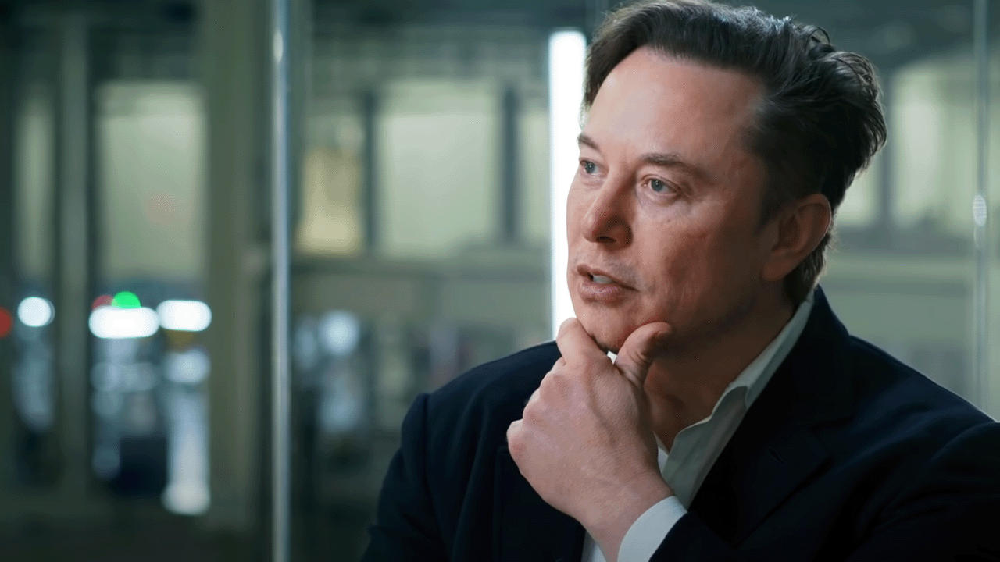

Elon Musk

Elon Musk, business magnate and investor, is the second-wealthiest person in the world
Here's a time line of Elon Musk's investments and businesses:
- Zip2 - In 1995, Musk, his brother Kimbal, and Greg Kouri founded Zip2. Errol Musk provided them with $28,000 in funding. The company developed an Internet city guide with maps, directions, and yellow pages, and marketed it to newspapers.
- X.com and PayPal - In 1999, Musk co-founded X.com, an online financial services and e-mail payment company. X.com was one of the first federally insured online banks, and over 200,000 customers joined in its initial months of operation. In 2000, X.com merged with online bank Confinity to avoid competition, as Confinity's money-transfer service PayPal was more popular than X.com's service.
- SpaceX - With $100 million of his own money, Musk founded SpaceX in May 2002 and became the company's CEO and Chief Engineer.
- Starlink - In 2015, SpaceX began development of the Starlink constellation of low-Earth-orbit satellites to provide satellite Internet access, with the first two prototype satellites launched in February 2018
- Tesla - Tesla, Inc.—originally Tesla Motors—was incorporated in 2003
- SolarCity and Tesla Energy - Musk provided the initial concept and financial capital for SolarCity, which his cousins Lyndon and Peter Rive founded in 2006. By 2013, SolarCity was the second largest provider of solar power systems in the United States.
- Neuralink - In 2016, Musk co-founded Neuralink, a neurotechnology startup company, with an investment of $100 million. Neuralink aims to integrate the human brain with artificial intelligence (AI) by creating devices that are embedded in the brain to facilitate its merging with machines
- The Boring Company - In 2017, Musk founded the Boring Company to construct tunnels and revealed plans for specialized, underground, high-occupancy vehicles that could travel up to 150 miles per hour (240 km/h) and thus circumvent above-ground traffic in major cities.
- Twitter - Musk expressed interest in buying Twitter as early as 2017, and had previously questioned the platform's commitment to freedom of speech. In January 2022, Musk started purchasing Twitter shares, reaching a 9.2% stake by April, making him the largest shareholder.
"Musk has been described as believing in longtermism, emphasizing the needs of future populations. Accordingly, Musk has stated that artificial intelligence poses the greatest existential threat to humanity. He has warned of a "Terminator-like" AI apocalypse and suggested that the government should regulate its safe development. In 2015, Musk was a cosignatory, along with Stephen Hawking and hundreds of others, of the Open Letter on Artificial Intelligence, which called for the ban of autonomous weapons."
-- Wikipedia